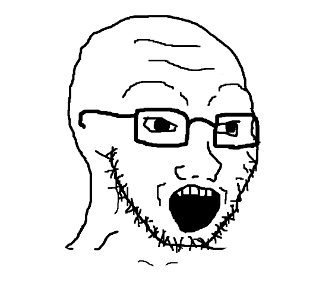
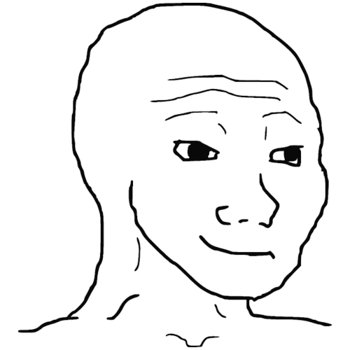

This website has some subtext that goes here under the main title. It's smaller font and the color is lower contrast. Just like giga chad.
this is some subtext under a original chad
this is some sbutext under a sharp chad
this is some subtext under chad nemesis
this is some subtext under wojak
This is an ispiring quote, or a testimonial from a chad. Maybe it's just filling up chad space as he assert dominance and people will actually submit. Who knows? All I know is that chad is the ultimate giga chad.
-Giga Chad, God of alpha men
Sign up for our product by clicking that button right over there!